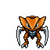
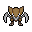

Pokédex / #141

Kabutops #141
RockWater
It swims freely through water. It catches prey with its scythe-like arms and drains the victim's fluids.
Generation 1 · Kanto

Stats
| Attack | 115 | |
|---|---|---|
| Defense | 105 | |
| Sp. Atk | 65 | |
| Sp. Def | 70 |
In the wild
| Wild level | 70–80 |
|---|---|
| HP | 60 |
| Experience | 15 |
| Egg groups | – |
Evolution
- Evolves from Kabuto at level 40.
Moves
| Level | Move | Type | Category | Power | Energy | Cooldown | Effect | |
|---|---|---|---|---|---|---|---|---|
| 1 | Tackle | Normal | Physical | 15 | 15 | 1s | Tackle is one of the most common and basic moves a Pokemon learns. It deals damage with no additional effects. | |
| 5 | Absorb | Grass | Special | 20 | 35 | 5s | Absorb deals damage and the user will recover 50% of the HP drained. | |
| 10 | Scratch | Normal | Physical | 40 | 40 | 6s | Scratch inflicts damage and has no secondary effect. | |
| 15 | Bubblebeam | Water | Special | 65 | 70 | 16s | Bubblebeam deals damage and has a 10% chance of lowering the target's Speed by one stage. | |
| 20 | Harden | Normal | Status | – | 70 | 60s | Harden raises the user's Defense by one stage. | |
| 25 | Mud Shot | Ground | Special | 55 | 60 | 9s | Mud Shot deals damage and lowers the target's Speed by one stage. | |
| 30 | Mega Drain | Grass | Special | 40 | 65 | 12s | Mega Drain inflicts damage, and 50% of the damage dealt to the target is restored to the user. The amount of HP recovered is always rounded down. | |
| 35 | Ancient Power | Rock | Special | 60 | 70 | 14s | Ancient Power inflicts damage and has a 10% chance of raising all of the user's stats by one stage. | |
| 40 | Aqua Jet | Water | Physical | 40 | 40 | 6s | The user lunges at the target at a speed that makes it almost invisible. | |
| 45 | Superpower | Fighting | Physical | 120 | 120 | 20s | Superpower deals damage but lowers the user's Attack and Defense by one stage each after attacking. | |
| 50 | Earth Power | Ground | Special | 9 | 100 | 21s | Earth Power deals damage and has a 10% chance of lowering the target's Special Defense by one stage. | |
| 55 | Brick Break | Fighting | Physical | 75 | 75 | 12s | Brick Break deals damage, but removes the effects of Reflect before attacking. | |
| 60 | Night Slash | Dark | Physical | 70 | 70 | 11s | Night Slash deals damage and has an increased critical hit ratio. | |
| 65 | Scald | Water | Special | 80 | 90 | 19s | The user shoots boiling hot water at its target. This may also leave the target with a burn. | |
| 70 | Wring Out | Normal | Special | 120 | 90 | 18s | The power of Wring Out varies between 1 and 120 depending on how much HP the opponent has. The more HP the opponent has, the more damage this move will do. Its damage is calculated by the following formula: Base Power = 120 x (Opponent's Current HP/Opponent's Maximum HP) |
Field abilities
DigRock ClimbWaterfallSurfDiveHeadbutt
Special abilities
Battle ArmorSwift Swim
Egg moves
Aurora BeamBubblebeamConfuse RayFlailForesightGiga DrainIcy WindKnock OffMud ShotRapid SpinScreechTake Down
Technical machines
Aerial AceBideBlizzardBody SlamBrick BreakBubblebeamDouble EdgeDouble TeamFury CutterGiga DrainHailHeadbuttHyper BeamIce BeamIcy WindMega KickMimicRageRain DanceRazor WindReflectRestRock SlideRock TombSandstormSeismic TossSkull BashSoftboiledSubmissionSubstituteSwords DanceTake DownToxicWater GunWater Pulse
Drops
| Item | Amount | Chance | |
|---|---|---|---|
 | kabutops doll | 1 | 0.1% |
| Splash Plate | 1 | 0.05% | |
| Stone Plate | 1 | 0.05% | |
| TM 20 | 1 | 0.01% | |
| held hard stone | 1 | 0.01% | |
| held mystic water | 1 | 0.01% |